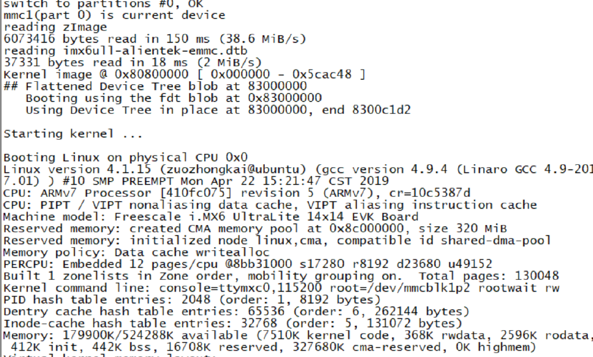
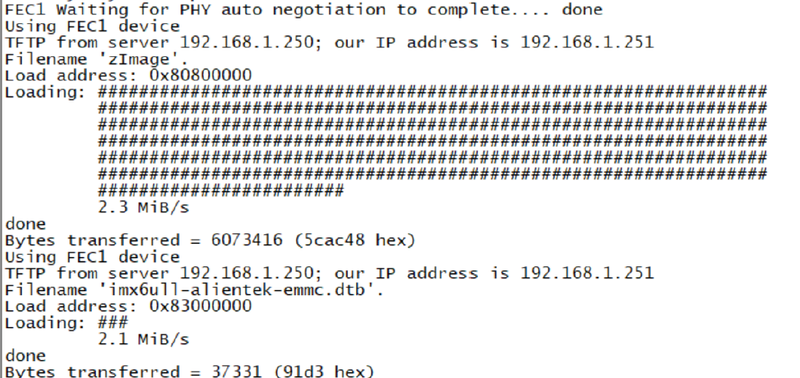

uboot
U-Boot
Linux系统要启动就必须需要一个bootloader程序，也就说芯片上电以后先运行一段bootloader 程序。这段bootloader程序会先初始化DDR 等外设，然后将Linux内核从flash(NAND，NOR FLASH，SD，MMC 等)拷贝到DDR中，最后启动Linux内核。它最主要的工作就是启动Linux内核
U-Boot的主要作用
U-Boot在嵌入式系统中的核心作用主要体现在以下几个方面：
- 硬件初始化与管理：U-Boot负责进行Soc级（内部外设）和板级（外部外设）的硬件管理，初始化系统运行所必需的硬件，如CPU、时钟、内存（SDRAM）、串口、网卡、存储设备（如NAND Flash）等。这是内核正确运行的基础。
- 镜像烧录（刷机）：U-Boot是系统更新的关键工具。它可以通过特定的命令配合PC端工具，完成包括U-Boot自身、内核、根文件系统等镜像的烧写。
- 加载并启动操作系统内核：这是U-Boot的终极使命。它会从存储设备（如Flash、SD卡）上读取操作系统内核镜像（如Linux的zImage或uImage）和可选的设备树 dtb（DTB），将其加载到内存中，并最终将控制权交给内核。
- 提供交互式命令行界面（CLI）：U-Boot提供了一个功能丰富的命令行接口，允许开发人员通过串口或网络进行调试、查看和修改内存、读写环境变量、测试硬件、更新系统等操作，极大地便利了开发和调试工作。
U-Boot的启动流程（两阶段）
U-Boot的启动过程通常分为两个阶段
第一阶段：底层硬件初始化
这个阶段通常用汇编语言编写，与CPU架构紧密相关，主要负责初始化最基础的硬件环境。芯片内部通常有一小块只读存储器（ROM），里面固化了最最基础的启动代码（ROM Code）。上电后，ROM Code会从预定的设备（如SD卡的第一个扇区、eMMC的boot分区等）加载一小段代码到内部SRAM中执行。
- 设置CPU模式：将处理器设置为管理模式（SVC Mode），以便执行特权操作。
- 关闭中断和MMU：关闭中断（FIQ和IRQ），屏蔽所有中断请求；关闭MMU（内存管理单元）和Cache（缓存），因为此时内存尚未初始化，虚拟地址无法使用。
- 关闭看门狗：防止看门狗定时器溢出导致系统复位。
- 初始化时钟和内存控制器：配置系统时钟和内存控制器，为后续内存的使用做准备。初始化完DRAM后，就可以将完整的主U-Boot镜像从存储设备（如SD卡、eMMC、NOR Flash）复制到外部DRAM中的指定地址。
- 初始化串口：以便后续输出调试信息，方便开发者查看启动过程。
- 设置栈指针和代码重定位：设置栈指针，为后续调用C函数准备运行环境；进行代码重定位，将U-Boot自身从只读存储器（如NOR Flash）拷贝到SDRAM中运行，以加快执行速度。
- 清除BSS段：为未初始化的全局变量和静态变量分配空间并清零。
第二阶段：高级初始化与引导
这个阶段主要用C语言编写，提供了更好的可读性和可移植性，负责完成更复杂的初始化并最终引导内核。
- 初始化本阶段硬件：初始化后续操作需要的硬件设备，如网卡、NAND Flash等。
- 检测系统内存映射：检测系统内存的容量和分布情况。
- 初始化环境变量：从非易失性存储器（如Flash的特定区域）中读取环境变量到内存中。环境变量包含了重要的系统配置参数，如启动参数、IP地址等。
- 解析启动参数和命令：提供命令行界面，等待用户输入（如有需要）。若在倒计时内无用户干预，则执行默认的启动命令（
bootcmd）。 - 加载内核与设备树：根据环境变量或默认配置，从存储设备（如Flash、网络通过TFTP）将内核镜像（如
zImage）和设备树文件（DTB） 加载到内存的指定地址。 - 传递参数并启动内核：为内核设置启动参数（如通过ATAGs或Device Tree），关闭Cache和中断，最后跳转到内核的入口点，将控制权彻底移交给操作系统内核。
U-Boot 如何将系统权限交给 Linux 内核
1. 加载内核映像到内存
U-Boot 本身并不“执行”内核，它只是作为一个加载器（Loader）。它首先需要将内核映像（通常是 zImage, uImage 或 Image）从存储设备（eMMC, SD, NAND, NOR）或者通过网络（TFTP）加载到内存的某个指定地址。
- 例如：
load mmc 0:1 0x80008000 zImage- 从MMC设备0的分区1加载zImage到内存地址0x80008000。
2. 准备启动参数
Linux 内核启动时需要一些关键信息，例如：
- 根文件系统在哪里？（在哪个设备、哪个分区）
- 控制台是哪个终端？（如
console=ttyS0,115200） - 其他内核参数（如调试信息、CPU频率等）
这些信息通过 “启动参数” 传递给内核。传递方式主要有两种：
- ATAGs（传统方式）：主要用于旧的ARM架构（ARMv7及之前）。U-Boot 在内存中创建一个数据结构列表（ATAG_LIST），其中包含了内存大小、根文件系统参数、命令行字符串等。然后通过寄存器
r2告诉内核这个列表的起始地址。 - 设备树（Device Tree Blob - DTB，现代方式）：用于几乎所有新的ARM（ARMv8）、RISC-V、MIPS等架构。U-Boot 首先将
.dtb文件加载到内存中的另一个地址（不能与内核映像地址重叠），然后通过寄存器r2（ARM32）或x0（ARM64）告诉内核设备树在内存中的地址。
bootargs 环境变量就是用来设置传递给内核的命令行参数的。U-Boot 会将这些参数打包到ATAGs或设备树的 chosen 节点中。
3. 跳转执行
这是最关键的一步。在一切都准备好之后，U-Boot 会执行一条指令，直接跳转到已加载到内存中的内核映像的入口点，并同时传递三个关键参数。此后，U-Boot 的生命周期就结束了，内存的控制权完全交给内核。
U-Boot的常用命令
| 类别 | 命令示例 | 功能描述 |
|---|---|---|
| 信息查看 | printenv |
打印所有环境变量 |
bdinfo |
打印板级信息 | |
version |
显示U-Boot版本 | |
| 环境变量 | setenv <var> <value> |
设置环境变量 |
saveenv |
保存环境变量到持久存储 | |
| 内存操作 | md[.b, .w, .l] <addr> |
显示内存内容（字节、字、长字） |
mm[.b, .w, .l] <addr> |
修改内存内容（地址自动递增） | |
mw[.b, .w, .l] <addr> <val> [count] |
向内存填充数据 | |
cp[.b, .w, .l] <src> <dst> <count> |
复制内存区域 | |
| 存储操作 | nand read <addr> <off> <size> |
从NAND Flash偏移off读取size数据到addr |
nand write <addr> <off> <size> |
将addr处size数据写入NAND Flash偏移off |
|
| 网络操作 | tftpboot <addr> <filename> |
通过TFTP下载文件到内存addr |
| 启动命令 | bootm [addr] |
启动存储在地址addr的U-Boot格式镜像 |
boot |
执行bootcmd环境变量中的命令 |
|
go <addr> [arg ...] |
跳转到地址addr执行应用程序 |
bootcmd 和 bootargs
U-Boot 中的 bootcmd 和 bootargs 环境变量对理解系统启动过程很重要。它们一个负责指挥启动流程，另一个则负责告诉内核如何配置系统。
bootcmd
bootcmd 是 U-Boot 的自动启动命令序列。它在 U-Boot 初始化完成后、等待用户输入的超时阶段自动执行，是系统自动启动的关键。
bootcmd 环境变量中定义的命令，其目的是加载内核镜像和设备树到内存中，并执行启动命令。例如，一个典型的 bootcmd 可能包含从 eMMC、SD 卡、NAND Flash 或通过网络（TFTP、NFS）加载内核和设备树文件（如 zImage 和 .dtb）的命令，然后使用 bootm、bootz（针对 ARM）或 booti 等命令来启动内核。
bootargs 的作用和操作
bootargs 环境变量用于存储传递给 Linux 内核的启动参数。这些参数决定了内核启动后的许多行为，例如控制台设备、根文件系统的位置和类型、网络配置等
常见的 bootargs 参数包括：
console=：指定内核使用的终端（控制台）。例如console=ttyS0,115200表示使用第一个串口作为控制台，波特率为 115200。root=：指定根文件系统的位置。例如：root=/dev/mmcblk1p2：表示根文件系统在 MMC 设备的第 2 分区。root=/dev/nfs：表示根文件系统通过 NFS 网络挂载。root=/dev/mtdblock3：表示根文件系统在 MTD 设备的第 3 个块分区上（常用于 Nor/Nand Flash）。
rootfstype=：指定根文件系统的类型，如rootfstype=ext4、rootfstype=jffs2、rootfstype=ubifs等。在内核无法自动检测文件系统类型时需要指定。rootwait：要求内核等待根设备就绪后再尝试挂载，对于慢速初始化设备（如 USB、MMC）很有用。rw或ro：以读写（read-write）或只读（read-only）模式挂载根文件系统。init=：指定内核启动后执行的第一个程序，默认为/sbin/init。例如init=/linuxrc。mtdparts=：定义 MTD 分区信息，传递给内核以便正确识别 Flash 上的分区布局。ip=：配置网络接口的 IP 地址等，在 NFS 根文件系统时常用。
| 特性 | bootcmd | bootargs |
|---|---|---|
| 主要作用 | 定义自动启动的命令序列 | 设置传递给Linux内核的启动参数 |
| 执行时机 | U-Boot倒计时结束后，若用户无输入则自动执行 | 在bootcmd或手动命令启动内核时传递给内核 |
| 内容性质 | 可执行的命令（如加载文件、启动内核） | 文本格式的参数（键值对） |
| 典型操作 | 从存储设备或网络加载内核镜像、设备树文件，并执行bootm/bootz等命令启动内核 |
设置控制台、根文件系统位置及类型、网络参数等 |
| 是否必须 | 非必须，但通常配置以实现自动启动 | 通常必须（除内核内置参数情况外），否则内核可能无法正确挂接根文件系统或启动 |
U-Boot移植
uboot 移植的一般流程：
- 在uboot 中找到参考的开发平台，一般是原厂的开发板。
- 参考原厂开发板移植uboot 到我们所使用的开发板上。
先在configs 目录下创建默认配置文件，复制mx6ull_14x14_evk_emmc_defconfig，然后重
命名为mx6ull_alientek_emmc_defconfig，在修改内容：1
2
3
4
5
6CONFIG_SYS_EXTRA_OPTIONS="IMX_CONFIG=board/freescale/mx6ull_alientek_
emmc/imximage.cfg,MX6ULL_EVK_EMMC_REWORK"
CONFIG_ARM=y
CONFIG_ARCH_MX6=y
CONFIG_TARGET_MX6ULL_ALIENTEK_EMMC=y
CONFIG_CMD_GPIO=y添加开发板对应的头文件
在目录include/configs 下添加I.MX6ULL-ALPHA 开发板对应的头文件， 复制
include/configs/mx6ullevk.h，并重命名为mx6ull_alientek_emmc.h，添加开发板对应的板级文件夹
uboot 中每个板子都有一个对应的文件夹来存放板级文件，比如开发板上外设驱动文件等等。进入mx6ull_alientek_emmc 目录中， 将其中的mx6ullevk.c 文件重命名为mx6ull_alientek_emmc.c
修改mx6ull_alientek_emmc 目录下的Makefile 文件
1
2
3
4
5
6
7
8
9
10(C) Copyright 2015 Freescale Semiconductor, Inc.
#
# SPDX-License-Identifier: GPL-2.0+
extra-$(CONFIG_USE_PLUGIN) := plugin.bin
$(obj)/plugin.bin: $(obj)/plugin.o
$(OBJCOPY) -O binary --gap-fill 0xff $< $@修改mx6ull_alientek_emmc 目录下的MAINTAINERS 文件
1
2
3
4
5MX6ULL_ALIENTEK_EMMC BOARD
M: Peng Fan <peng.fan@nxp.com>
S: Maintained
F: board/freescale/mx6ull_alientek_emmc/
F: include/configs/mx6ull_alientek_emmc.h
修改U-Boot 图形界面配置文件
uboot 是支持图形界面配置，修改arch/arm/Kconfig 这个文件，在最后一行的endif 的前一行添加如下内容：
1
2
3
4
5
6config TARGET_MX6ULL_ALIENTEK_EMMC
bool "Support mx6ull_alientek_emmc"
select MX6ULL
select DM
select DM_THERMAL
source "board/freescale/mx6ull_alientek_emmc/Kconfig"使用新添加的板子配置编译uboot
1
2
3
4#!/bin/bash
make ARCH=arm CROSS_COMPILE=arm-linux-gnueabihf- distclean
make ARCH=arm CROSS_COMPILE=arm-linux-gnueabihf- mx6ull_alientek_emmc_defconfig
make V=1 ARCH=arm CROSS_COMPILE=arm-linux-gnueabihf- -j16编译
1
2chmod 777 mx6ull_alientek_emmc.sh //给予可执行权限，一次即可
./mx6ull_alientek_emmc.sh //运行脚本编译uboot编译完成以后就使用imxdownload 将新编译出来的u-boot.bin 烧写到SD 卡中测试
uboot 启动Linux 测试
从EMMC 启动Linux 系统
从EMMC 启动也就是将编译出来的Linux 镜像文件zImage 和设备树文件保存在EMMC中，uboot 从EMMC 中读取这两个文件并启动，这个是我们项目最终的启动方式。
设置bootargs 和bootcmd这两个环境变量，设置如下：
1 | setenv bootargs 'console=ttymxc0,115200 root=/dev/mmcblk1p2 rootwait rw' |

从网络启动Linux 系统
将linux 镜像文件和根文件系统都放到Ubuntu 下某个指定的文件夹中，这样每次重新编译linux 内核或者某个linux 驱动以后只需要使用cp 命令将其拷贝到这个指定的文件夹中即可，这样就不用需要频繁的烧写EMMC，这样就加快了开发速度。
1 | setenv bootargs 'console=ttymxc0,115200 root=/dev/mmcblk1p2 rootwait rw' |
一开始是通过tftp 下载zImage 和imx6ull-alientek-emmc.dtb 这两个文件，过程如下图所示：
